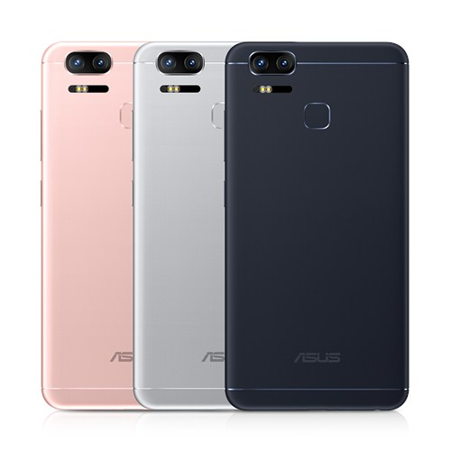

Renk Seçeneði Siyah
Kasa Yapýsý Metal
Boyutlar 154.3 x 77 x 7.99 mm (E x B x Y)
Aðýrlýk 170 g
Ýþletim Sistemi Android™ 6.0 – (7.0 Güncellemesi Alacak)
Ara Yüz ASUS ZenUI 3.0
Ýþlemci Ailesi ProcessorSnapdragon™ 625
2.0Ghz x 4 Çekirdek
GPU Adreno™ 506
Ekran Boyutu 5.5-inch
Ekran Çözünürlüðü FHD(1920 x 1080) Super Amoled
Ekran/Kasa Oraný %76.5
Parkalýklýk 500nits
Cam Yapýsý Corning® Gorilla® Glass4
Dokunmatik Yapýsý 10 Parmak Kapasitif Ekran
Ram Bellek 4GB
Depolama Kapasitesi eMCP 64GB
Micro SD Max. 2 TB
ASUS WebStorage 5GB Ücretsiz – Ömür Boyu
Google Drive 100GB Ücretsiz – 2 yýl
Batarya 5000mAh Lithium (Çýkarýlamaz)
Batarya Ömrü 3G Bekleme – 42 Gün,
3G Konuþma – 48 Saat,
1080p @30 FPS
OIS Desteði Yok
EIS Desteði Var 3 Eksenli
Wi-Fi Teknolojisi 802.11b/g/n
Bluetooth V4.2 +A2DP +EDR +AVRCP +HID +PAN +OPP
Wi-Fi direct Var
Navigasyon GPS/A-GPS/GLONASS/BDS
Sim Kart Çift Sim – Nano + Nano
4.5G Desteði LTE CAT4
50 Mbps Ýndirme, 150 Mbps Yükleme
Giriþ/Çýkýþ Portlarý USB Type-C 2.0
Ses Giriþ Çýkýþ Portu 3.5mm
Ön Kamera 13 MP, f/2.0 aperture , 5 P Largan lens
Ön Kamera Özellikleri Fix Focus,
PixelMaster Kamera,
Arka Kamera Dual Kamera
Kamera 1 12MP, f/1.7 aperture, 6 P Largan lens
Kamera 2 12MP, f/2.0 aperture, 5 P Largan lens
Güç Adaptörü 5 Volt – 2 Amper – 10 Watt
Parmak Ýzi Okuyucu Var